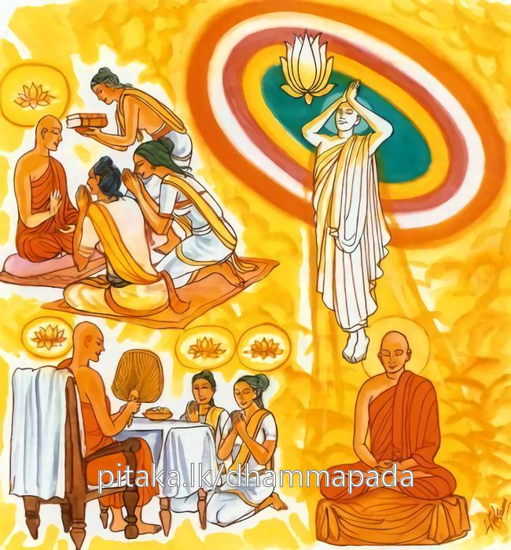

24-10 දෙවියන් අතර පැන නැගුනු ප්රශ්න සතරෙක්.
මෙම කතාව ධම්මපද අටුවාවෙන් ද කියවන්න.
සබ්බදානං ධම්මදානං ජිනාති
සබ්බං රසං ධම්මරසො ජිනාති
සබ්බං රතිං ධම්මරතී ජිනාති
තණ්හක්ඛයො සබ්බදුක්ඛං ජිනාති.
ධර්මදානය තෙම සියලු ආමිස දානය පරදවයි (ධර්මදානය ම උත්තම යී.) (බෝපැකි දහම් නව ලොවුතුරා දහම් නැමැති) ධර්ම රසය (ලොව ඇති ලවණාදි) සියලු රස පරදවයි. (ධර්මරසය ම උතුමි.) (දම් දෙසන්නහුට ද අසන්නහුට ද උපදනා ප්රීතිය වූ) ධර්මරතිය (දූ පුත් ආදීන් නිසා ඇති වන තාක්) සියලු රතිය (ප්රීතිය) පරදවයි (ධර්මරතිය ම උතුමි.) තෘෂ්ණාක්ෂයය (රහත්පලය) (සසරදුක් මැඬ ලන බැවින්) සියලු දුක් පරදවයි.

තව්තිසා වැසි දෙවියන් අතර “දානයන් අතුරෙහි කවර නම් දානයෙක් උතුම්? රස අතුරෙහි කවර නම් රසයෙක් උතුම්? රති අතුරෙහි කවර නම් රතියෙක් උතුම්? කුමක් හෙයින් තෘෂ්නාක්ෂය නම් වූ අර්හත්වය ශ්රේෂ්ඨ දැ?”යි යන මේ ප්රශ්න සතරෙක් උපන. එහෙත් දෙවියෝ ඒ ප්රශ්න විසඳා ගැණීමෙහි අපොහොසත් වූහ. එක් දෙවියෙක් අන් දෙවියකු අතින්, ඒ දෙවි අන් දෙවියකු අතින් යන මේ ලෙසින් උනුන් විචාලෝ ද එකෙකුගෙනුත් ඒ ප්රශ්නයන්ට පිළිතුරු නො ලැබ ඔවුහු දස දහස් සක්වළ දොළොස් අවුරුද්දක් පමණ තැන තැන හැසුරුණාහ. නැවැත ඔවුහු සිවු මහරජුන් වෙත ගියහ. සිවු මහරජදරුවෝ දෙවතාසන්නිපාතය දැක “මේ සන්නිපාතය කුමක් නිසා?”යි ඔවුන් විචාළහ. “දේවයන් වහන්ස! අප අතර නැගි ප්රශ්න සතරෙක් ඇත්තේ ය, ඒ එකකටවත් මෙතෙක් පිළිතුරු සපයා ගත නො හැකි විය, එහෙයින් අපි ඒ ප්රශ්නයනට පිළිතුරු ලබා ගණු රිසියෙන් ඔබවහන්සේලා වෙත ආම්හ”යි දෙවියන් කී විට වරම්රජහු “ඒ ප්රශ්න සතර කියාලවු”යි කීහ. එකල්හි එහි රැස් වූ දෙවියෝ “දාන අතුරෙහි කවර නම් දානයෙක් උතුම්? රස අතුරෙහි කවර නම් රසයෙක් උතුම්? අති අතුරෙහි කවර නම් රතියෙක් උතුම්? කුමක් හෙයින් තෘෂ්ණාක්ෂය නම් වූ අර්හත්ත්වය ශ්රේෂ්ඨ දැ?”යි තමන් අතර නැගි ඒ ප්රශ්න සතර කියා එයට පිළිතුරු ඉල්ලා සිටියහ. වරම්රජහු “අපිදු මේ ප්රශ්නයනට පිළිතුරු දෙන්නට නො දැනුම්හ, සක්දෙව් රජ තෙමේ දහසක් දෙනා විසින් සිතා ලූ මොන යම් ම ප්රශ්නයක් වුව ද ඒ හැම ප්රශ්නයක් මොහොතකින් විසඳන්නට සමර්ත්ථ වූයේ ය, ඔහු අප හැමට වඩා පිනෙන් තෙදින් නුවණින් බලයෙන් මහත් ව සිටුනේ ය, එවු, එහි යන්නටැ”යි දෙවගණයාත් ගෙණ සක්දෙව්රජුහු වෙත ගියහ.
සක්දෙව් රජ මහත් වූ දෙවසමූහයා දැක “මෙතරම් මහත් දෙවසමූහයෙක් මෙහි ආයේ කුමටැ”යි විචාළ විට වරම්රජහු ඒ ප්රශ්න සක්දෙව් රජුට දන්වා සිටියහ. ඉක්බිති සක්දෙව් රජ තෙමේ “මේ ප්රශ්න විසඳා කියාලන්නට දන්නෙක් අප අතර නැත, බුදුරජානන් වහන්සේ හැර අනෙකෙක් මේ ප්රශ්න විසඳීමෙහි සමර්ත්ථ නො වේ, බුදුරජානන් වහන්සේට ම මෙය විෂය වන්නේ ය, මෙය විසඳීමෙහි සමර්ත්ථ බුදුරජානන් වහන්සේ ම ය, උන්වහන්සේ මෙ දවස කො තැන්හි වැඩ වසන සේක් දැ?”යි ඇසී ය. “දෙව්රම් මහවෙහෙරැ”යි උන් කී කල්හි සක්දෙව්, එදා රෑ ම මුළු දෙව්රම් මහවෙහෙර බබුලුවා ගෙණ දෙව් පිරිසත් ගෙණ බුදුරජුන් වෙත ගොස් වැඳ එකත් පසෙක වී සිටියේ ය. එ කල්හි උන්වහන්සේ “මහරජ! මහත් වූ දෙව්පිරිසකුත් ගෙණ මෙහි ආවහු කුමක් නිසා?” යි අසා වදාළ විට “ස්වාමීනි! භාග්යවතුන් වහන්ස! මේ දෙවියෝ ප්රශ්න සතරක් පිළියෙල කොට අවුත් එයට පිළිතුරු කියන්නැ’යි මාගෙන් ඉල්ලා සිටිත්, මෙයට පිළිතුරු දීමෙහි මා අපොහොසත් බව කියා බුදුරජානන් වහන්සේ හැර අනෙකෙක් මෙහි සමර්ත්ථ නො වේ ය’යි දන්වා මුන් ගෙණ මෙහි ආයෙමි, එහෙයින් අපට ඒ ප්රශ්න විසදා දෙනු මැනැවැ”යි කීයේ ය. “මහරජ! මෙහි අරුත් දන්නට මෙයට පිළිතුරු සපයා ගන්නට මෙහි පැමිණීම විය යුතු ම ය, මා පැරුම් පුරා මහාපරිත්යාග කොට සර්වඥතාඥානය අත්පත් කරගන්නා ලද්දේ ද ඔබ වැන්නවුන් විසින් අසන ප්රශ්න විසඳා ඔබ වැන්නවුන්ගේ සැක සිඳ හරිණු පිණිස ය, ඔබ ඇසූ ප්රශ්න අතුරෙහි පළමු ප්රශ්නයට, දාන අතුරෙහි ධර්මදානය ශ්රේෂ්ඨ ය, දෙවන ප්රශ්නයට, රස අතුරෙහි ධර්මරසය ශ්රේෂ්ඨ ය, තෙවන ප්රශ්නයට, රති අතුරෙහි ධර්මරතිය ශ්රේෂ්ඨ ය, සිවුවන ප්රශ්නයට තෘෂ්ණාක්ෂය ය රහත් බවට පමුණු වන බැවින් ශ්රේෂ්ඨ ය, යනු පිළිවෙළින් පිළිතුරු ය”යි වදාරා මේ ධර්මදේශනාව කළ සේක.
සබ්බදානං ධම්මදානං ජිනාති
සබ්බං රස ධම්මරසො ජිනාති,
සබ්බං රතිං ධම්මරතී ජිනාති
තණ්හක්ඛයො සබ්බදුක්ඛං ජිනාතීති.
ධර්මදානය සියලු දානයන් දිනන්නේ ය. ධර්මරසය සියලු රසයන් දිනන්නේ ය. ධර්මරතිය සියලු රතීන් දිනන්නේ ය. අර්හත්ඵලය සියලු දුක් දිනන්නේ ය.
සබ්බදානං ධම්මදානං ජිනාතා = ධර්මදානය සියලු දානයන් දිනන්නේ ය.
යමෙක් සිල්වත් ගුණවත් දක්ෂිණාර්හයක් හට දැහැමින් සෙමෙන් ලත් දශ දානවස්තුනට අයත් යම් ම දැයක් පූජා බුද්ධියෙන් පුදා ද, දේ ද ඒ පුදන්නහුගේ කුසල් සිත්හි උපදනා චේතනා මාත්රය දාන නම් වේ. ආමිසදාන ය යි. [1] “සබ්බදානං” යන මෙයින් ගැණෙනුයේ ඒ ය.
පූජාසත්කාර කීර්තිප්රශංසා ලැබීමෙහි ආශා නැති ව හුදෙක් නිවන් ලැබීමෙහි එක් ම අදහස් ඇති ව දහම් දෙසන්නහුට උපදනා කුසලචිත්තවීථියෙහි ජවනක්ෂණ සත හා යෙදෙන කුශල චේතනා මාත්රය ධම්මදාන නම්.
ඉදින් යමෙක් සක්වළ ගැබ මුළුල්ලෙහි බඹලොව දක්වා දණින් දණ ගාවා අතරක් නො තබා වැඩ හුන් බුදු - පසේබුදු - මහරහතුන් වහන්සේලාට කෙහෙල් ගොබ වැනි පිළීයෙන් කළ සිවුරු පුදන්නේ ද, ඒ මහාදානයෙහි සිවු පැදිගයකින් කරණ අනුමාදනා ධර්මදේශනාව ම ශ්රේෂ්ඨ වන්නී ය. ඒ ආමිසදානානිසංසය, අනුමෝදනාධර්මදේශනාවෙන් ලැබෙන ආනිසංසය සොළොස් වරක් සොළොසට බෙදා ලැබෙන කොටස පමණටත් නො එන්නේ ය. නො අගනේ ය. එහි අනුමෝදනා ධර්මදේශනාව ම ශ්රේෂ්ඨ ව සිටුනී ය. ආමිසදානයෙන් ලැබෙන ආනිසංසය අබිබවා සිටුනී ය. එහෙයින් ධර්මදේශනා කිරීම, ධර්මය උගැන්වීම, ධර්මශ්රවණය යන මේ ධාර්මික ක්රියාවේ මහත් අනුසස් ඇතියහ. එසේම අන්හු ලවා කරවන ධර්මශ්රවණය ද අනුසස් අතින් නැගී සිටින්නේ ය.
එබඳු පිරිසක්හට ම පා පුරා දුන් ප්රණීත ආහාරදානයට ද වඩා පා පුරා දුන් ගිතෙල් - මී - සකුරු ඈ බෙහෙත් දානයට ද වඩා අනුරපුර මහවෙහෙර වැනි නොයෙක් සිය දහස් ගණන් විහාරාරාම කරවා ලොහොපහය වැනි නොයක් සිය දහස් ගණන් ප්රාසාද කරවා දුන් සෙනාසන දානයට ද වඩා අනාථපිණ්ඩිකාදීන් විසින් වෙහෙර විහාර ගොඩ නැංවීමෙහි ලා කළ මහාධනපරිත්යාගයනට ද වඩා යටත් පිරිසයින් සිවු පැදිගයකින් අනුමෝදනා වහයෙන් කරණ ලද ධර්මදානය ම ශ්රේෂ්ඨ වන්නේ ය. මෙබඳු මහත් පරිතයාග කරන්නෝ ද ධර්මය අසා ම තුන් සිත පහදා ගෙණ ම දැන කරන්නෝ ය. ඉදින් මේ සත්ත්වයෝ දහම් නො අසන්නාහු නම් කෙණෙස්සක් පමණ කැඳක් සැන්දක් පමණ බතක් නො දෙන්නෝ ම ය. මේ හේතුවෙන් සියලු ආමිසදානයට වඩා ධර්මදානය ශ්රේෂ්ඨ වේ.
තවද බුදු - පසේබුදුරජුන් තබා කපක් මුළුල්ලෙහි වට වැස්සෙහි දියබිඳු ගැණ කියන්නට සමර්ත්ථ වූ නුවණින් යුත් ශාරීපුත්රාදී වූ මහාශ්රාවකයෝ පවා ස්වශක්තියෙන් ස්රෝතාපත්තිඵලාදියට පැමිනෙන්නට අසමර්ත්ථ වූවාහු අස්සජි ආදී වූ මහතෙරුන් විසින් වදාළ ධර්මය අසා ම ස්රෝතාපත්තිඵලය සාක්ෂාත් කළහ. බුදුරජානන් වහනසේගෙන් බණ අසා ශ්රාවකපාරමීඥානය ලැබූහ. කරුණු මෙසේ බැවින් ධර්මදානය අන් සියලු ආමිසදානයන් යට කොට නැගී සිටින්නේ ය.
සබ්බං රසං ධම්මරසො ජිනාති = ධම්මරසය සියලු රසයන් දිනන්නේ ය.
ලවනාම්ල තික්ත කටුක කෂාය මධුර යි ප්රධාන විසින් රසය සවැදෑරුම් ය. ලෝකයෙහි ඇති තාක් රසවිශේෂයෝ මේ ෂට්රසයෙහි ඇතුළත් වෙති. ඇතුළත් වූවෝ නම්: සැකෙවින් බන්ධ පත්තතච- මූල පුප්ඵ - ඵල රසාදීහු ය. මේ ලවනාම්ලාදි රස හා උඩත් පිරිසෙයින් දෙවියන්ගේ සුදාභෝජන රසය ද සත්ත්වයන් සසරෙහි හෙලා දුක් විඳුවන්නට කරුණු වන්නේ ය. ලෝකයෙහි ඇති තාක් ඒ රස “සබ්බං රසං” යන්නෙන් ගැණුනේ ය.
‘ධම්මරස’ නම්:- සප්තත්රිංශත්බොධිපාක්ෂිකධර්ම හා නවලෝකෝත්තර ධර්ම යි. ඒ මේ ධර්මරසය සත්ත්වයන් ජරාමරණ නැතියවුන් කරණ බැවින් සියලු රසයනට වඩා ශ්රේෂ්ඨ වේ. සියලු රස අබිබවා සිටියේ ය.
සබ්බං රතිං ධම්මරති ජිනාති = ධර්මරතිය සියලු රතීන් දිනන්නේ ය.
අඹු - දරු - දැසි - දස් - ධන - ධාන්ය - නෘත්ය - ගීත - වාදිතාදියෙහි වූ නන් වැදෑරුම් ඇලුම් “සබ්බං රතිං” යන්නෙන් ගැණේ. ඒ සියලු රතීහු සත්ත්වයනට සසර ඉපද දුක් විඳීමට කරුණු වෙත්.
ලාභසත්කාරයෙහි බලාපොරොත්තු රහිත ව නිවන් ලැබීමෙහි එක් ම අදහසින් දහම් දෙසන්නහුට ද එසේ නිශ්ශරණාද්ධ්යාසයෙන් දහම් අසන්නහුට හා දහම් උගන්වන්නහුට ද උපදනා ප්රීතිය ‘ධම්මරති’ නම්. එය ඔදවැඩිබව උපදවන්නී ලොමු ඩැහැගන්වමින් සසර දුක් කෙළවර කොට රහත්බව අවසන් කොට සිටියා සියලු රතීන්ට වඩා ශ්රේෂ්ඨ වේ. සියලු රතීන් යටපත් කොට සිටියා ය.
තණහක්ඛයො සබ්බදුක්ඛං ජිනාති = අර්හත්ඵලය සියලු දුක් දිනන්නේ ය.
කාමතණ්හා - භවතණ්හා - විභවතණ්හා යන සියලු තෘෂ්ණාවන් නසාලන බැවින් අර්හනමාර්ගය ‘තණ්හක්ඛය’ නම්. ඒ අර්හනමාර්ගඥානාවසානයෙහි තදනු කූලව උපදනා අර්හත්ඵලය ද ‘තණ්හක්ඛය’ යි ගැණේ. ඒ මේ අර්හත්ඵලය සියලු සසරදුක් මුළුමනින් නසාලන බැවින් සියලු දුක් ජය ගන්නේ සියල්ලනට ශ්රේෂ්ඨ වේ. ඇති තාක් දුක් නසා ලනුයේ අර්හත්ඵලය යි. [2]
මෙසේ බුදුරජානන් වහන්සේ මේ ගාථායෙහි අරුත් වදාරත් ම අසූසාරදහසක් ප්රාණීන්ට ධර්මාවබෝධය වූයේ ය. ඉක්බිති සක්දෙව් බුදුරජානන් වහන්සේගේ මේ ධර්මකථාව අසා වැඳ “ස්වාමීනි! මෙතරම් ශ්රේෂ්ඨ වූ ධර්මදානයෙහි පින් අපට නො ද දෙවන සේක් කුමක් නිසා ය; ස්වාමීනි! මෙතැන් පටන් කොතැනක හෝ බණක් වදාළොත් බණ අවසන්හි එහි පින් අපටත් පමුණුවන ලෙසට භික්ෂුසඞ්ඝයාහට අනුදැන වදාළ මැනැවැ”යි ඉල්ලා සිටියේ ය. බුදුරජානන් වහන්සේ ඔහුගේ බස් අසා භික්ෂුසඞ්ඝයා රැස් කරවා “මහණෙනි! සක්දෙව් මෙහි මා වෙත ආයේ ය, ආයේ එකලාව නොවෙ යි, ඔහුගේ පිරිවර වූ දෙවසමූහයාත් කැටුව ය., අවුත් දාන අතුරෙහි කවර නම් දානයක් උතුම්?, රස අතුරෙහි කවර නම් රසයෙක් උතුම්?, රතීන් අතුරෙන් කවර නම් රතියෙක් උතුම්?, කුමක් හෙයින් අර්හත්වය ශ්රේෂ්ඨ ද? යන මේ ප්රශ්න සතර ඇසී ය, මම එයට නියම විසින් පිළිතුරු දුනිමි, මාගේ ඒ පිළිතුරු කථාව ඇසූ අසූ සාරදහසක් දෙනාට ධර්මාවබෝධය වූයේ ය, එතැන දී සක්දෙව් කො තැනක හෝ ධර්මදේශනාවක් කරණලද්දී නම් එහි දී ඔවුනටත් පින් පවරනු මැනවයි මාගෙන් ඉල්ලී ය, මෙය තමුසේලා විසින් සිහියේ තබා ගතයුතු ඉල්ලීමෙකි, එහෙයින් අද පටන් තමුසේලා මහාධර්මශ්රවණයක් හෝ ප්රකෘති ධර්මශ්රවණයක් හෝ රැස්ව හිඳ කරණ ධර්මකථාවක් හෝ යටත් පිරිසයින් අනුමෝදනා ධර්මදේශනාවක් හෝ පවත්වන්නහු නම් ඒ හැම තැන දී සියලු සතුන්ට එහි පින් පමුණුවා ලවු”යි නියම කළ සේක.
ශක්රප්රශ්න වස්තුව නිමි.